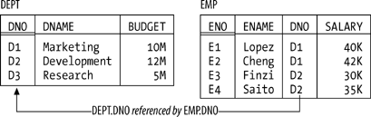

|
|
< Day Day Up > |
|
A Review of the Original ModelYou're a database professional, so you already have some familiarity with the relational model. The purpose of this section is to serve as a kickoff point for our subsequent discussions; it reviews some of the most basic aspects of that model as originally defined. Note the qualifier "as originally defined"! One widespread misconception about the relational model is that it's a totally static thing. It's not. It's like mathematics in that respect: mathematics too is not a static thing but changes over time. In fact, the relational model can itself be seen as a small branch of mathematics; as such, it evolves over time as new theorems are proved and new results discovered. What's more, those new contributions can be made by anyone who's competent to do so. Like mathematics again, the relational model, though originally invented by one man, has become a community effort and now belongs to the world. By the way, in case you don't know, that one man was E. F. Codd, at the time a researcher at IBM.[*] It was late in 1968 that Codd, a mathematician by training, first realized that the discipline of mathematics could be used to inject some solid principles and rigor into the field of database management, which was all too deficient in such qualities prior to that time. His original definition of the relational model appeared in an IBM Research Report in 1969, and I'll have a little more to say about that paper in Appendix B.
Structural FeaturesThe original model had three major components—structure, integrity, and manipulation—and I'll briefly describe each in turn. Please note right away, however, that all of the "definitions" I'll be giving are very loose; I'll make them more precise as and when appropriate in later chapters. First of all, then, structure. The principal structural feature is, of course, the relation itself, and as everybody knows it's common to picture relations as tables on paper (see Figure 1-1 for a self-explanatory example). Relations are defined over types (also known as domains); a type is basically a conceptual pool of values from which actual attributes in actual relations take their actual values. With reference to the simple departments-and-employees database illustrated in Figure 1-1, for example, there might be a type called DNO ("department numbers"), which is the set of all valid department numbers. The attribute called DNO in the DEPT relation and the attribute called DNO in the EMP relation then would each contain values that are taken from that conceptual pool. (By the way, it isn't necessary for attributes to have the same name as the corresponding type, and often they won't. We'll see plenty of counterexamples later.) Figure 1-1. The departments-and-employees database—sample valuesAs I've said, tables like those in Figure 1-1 depict relations: n-ary relations, to be precise. An n-ary relation can be pictured as a table with n columns; the columns in the picture correspond to attributes of the relation and the rows correspond to tuples. Also, the value n can be any nonnegative integer. A 1-ary relation is said to be unary; a 2-ary relation, binary; a 3-ary relation, ternary; and so on. The relational model also supports various kinds of keys. To begin with, every relation has at least one candidate key.[*] A candidate key is just a unique identifier; in other words, it's a combination of attributes—often, but not always, a "combination" involving just one attribute—such that every tuple in the relation has a unique value for the combination in question. In Figure 1-1, for example, every department has a unique department number and every employee has a unique employee number, so we can say that {DNO} is a candidate key for DEPT and {ENO} is a candidate key for EMP. Note the braces, by the way: candidate keys are always combinations, or sets, of attributes—even when the set contains just one attribute—and braces are conventionally used to enclose sets of things.
Next, a primary key is a candidate key that's been singled out for special treatment in some way. If a given relation has just one candidate key, then it obviously makes no real difference if we say it's the primary key. But if the relation has two or more candidate keys, then we're supposed to choose one of them as primary, meaning it's somehow "more equal than the others." Suppose, for example, that every employee has a unique employee number and a unique employee name, so that {ENO} and {ENAME} are both candidate keys for EMP. Then we might choose {ENO}, say, to be the primary key. Notice I said we're supposed to choose a primary key. If there's just one candidate key, then there's no choice and no problem. But if there are two or more, then choosing one and making it primary smacks a little bit of arbitrariness (at least to me); certainly there are situations where there don't seem to be any good reasons for making such a choice. In this book, I usually will follow the primary key discipline—and in pictures like Figure 1-1 I'll mark primary key attributes by double underlining—but I stress the point that it's really candidate keys, not primary keys, that are significant from a relational point of view. Partly for this reason, from this point forward I'll use the term key, unqualified, to mean a candidate key specifically. (In case you were wondering, the "special treatment" enjoyed by primary keys over other candidate keys is mainly syntactic in nature, anyway; it isn't fundamental, and it isn't very important.) Finally, a foreign key is a set of attributes in one relation whose values are required to match the values of some candidate key in some other relation (or possibly in the same relation). With reference to Figure 1-1, for example, {DNO} is a foreign key in EMP whose values are required to match values of the candidate key {DNO} in DEPT (as I've tried to suggest by means of a suitably labeled arrow in the figure). By required to match, I mean that if, for example, EMP includes a tuple in which DNO has the value D2, then DEPT had better also include a tuple in which DNO has the value D2; otherwise, EMP would show some employee as being in a nonexistent department, and the database wouldn't be "a faithful model of reality." Integrity FeaturesAn integrity constraint (constraint for short) is basically just a boolean expression that must evaluate to TRUE. In the case of departments and employees, for example, we might have a constraint to the effect that SALARY values must be greater than zero. Now, any given database will be subject to numerous constraints, but those constraints will necessarily be expressed in terms of the relations in that particular database and will be specific to that database. By contrast, the relational model (at least as originally formulated) includes two generic integrity rules—generic in the sense that they apply to every database, loosely speaking. One has to do with primary keys and the other with foreign keys:
Let me explain the second first. By the term unmatched foreign key value, I mean a foreign key value for which there doesn't exist an equal value of the corresponding candidate key. Thus, for example, the departments-and-employees database would be in violation of the referential integrity rule if it included an EMP tuple with, say, a DNO value of D2 but no corresponding DEPT tuple. So the referential integrity rule simply spells out the semantics of foreign keys; the name referential integrity derives from the fact that any given foreign key value can be regarded as a reference to the tuple with that same value for the corresponding candidate key. In effect, therefore, the rule just says: "If B references A, then A must exist." As for the entity integrity rule, well, here I have a problem. The fact is, I reject the concept of "nulls" entirely; that is, it is my very strong opinion that nulls have no place in the relational model. (Codd thought otherwise, obviously, but I have strong reasons for taking the position I do.) In order to explain the entity integrity rule, therefore, I need to suspend disbelief, as it were (at least for the time being), but please understand that I'll be revisiting the whole issue of nulls in Chapter 3. In essence, then, a null is a "marker" that means value unknown (crucially, it's not itself a value; it is, to repeat, a marker, or flag). For example, suppose we don't know employee E2's salary. Then, instead of entering some real SALARY value in the tuple for that employee in relation EMP—we can't enter a real value, by definition, precisely because we don't know what that value should be—we mark the SALARY position within that tuple as null: As you can see, this tuple contains nothing at all in the SALARY position. In this book I'll use shading as just shown to highlight such empty positions; you can think of that shading as constituting the null "marker" or flag. In terms of relation EMP, then, the entity integrity rule says, loosely, that an employee might have an unknown name, department, or salary, but not an unknown employee number—because if the employee number were unknown, we wouldn't even know which employee (that is, which "entity") we were talking about. That's all I want to say about nulls for now. Forget about them until Chapter 3. Manipulative FeaturesThe manipulative part of the model consists of:
The relational assignment operator is fundamentally how updates are done in the relational model,[*] and I'll have more to say about it later, in the section "Relations Versus Relvars." As for the relational algebra, it consists of a set of operators that allow "new" relations to be derived from "old" ones (speaking very loosely). More precisely, each operator takes at least one relation as input and produces another relation as output; for example, difference (or MINUS) takes two relations as input and "subtracts" one from the other to derive another relation as output. And it's very important that the output is another relation: that's the well-known closure property of the relational algebra. The closure property is what lets us write nested relational expressions; since the output from every operation is the same kind of thing as the input, the output from one operation can become the input to another—meaning, for example, that we can take the difference between r and s, feed the result as input to a union with some relation u, feed that result as input to an intersection with some relation v, and so on.
Now, any number of operators can be defined that fit the simple definition of "at least one relation in, exactly one relation out." In the following list I'll briefly describe what are usually thought of as the original eight operators (essentially the ones Codd defined in his earliest papers); in Chapter 5 I'll introduce a number of additional operators and describe them in more detail. Figure 1-2 is a pictorial representation of the original eight operators. Note: If you're unfamiliar with any of these operators—especially divide!—and find the following brief descriptions hard to follow, don't worry about it; I'll be going into much more detail, with lots of examples, later (mostly in Chapter 5).
One last point to close this subsection: as you probably know, there's also something called the relational calculus. The relational calculus can be regarded as an alternative to the relational algebra; that is, instead of saying the manipulative part of the relational model consists of the relational algebra (plus relational assignment), we can equally well say it consists of the relational calculus (plus relational assignment). The two are equivalent and interchangeable, in the sense that for every algebraic expression there's a logically equivalent expression of the calculus and vice versa. I'll have a little more to say about the calculus in Appendix A. The Running ExampleI'll finish up this brief review by introducing the example I'll use as the basis for most if not all of the discussions in the rest of the book: the well-known suppliers-and-parts database (see Figure 1-3). To elaborate:
|
|
|
< Day Day Up > |
|